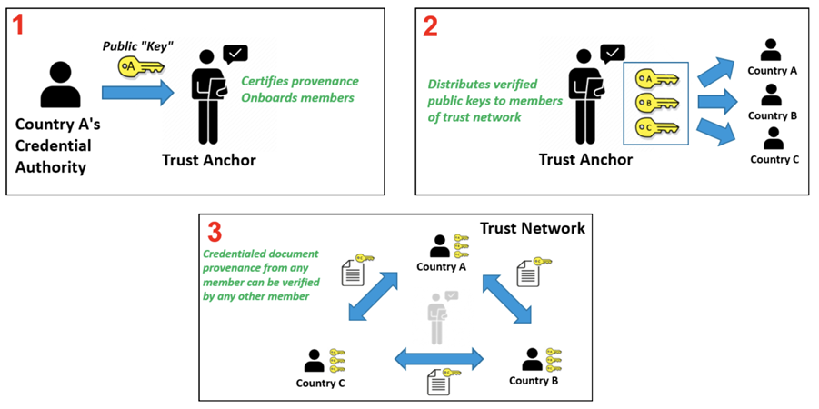

WHO SMART Trust
1.0.0 - 1.0.0

WHO SMART Trust
1.0.0 - 1.0.0

WHO SMART Trust, published by WHO. This guide is not an authorized publication; it is the continuous build for version 1.0.0 built by the FHIR (HL7® FHIR® Standard) CI Build. This version is based on the current content of https://github.com/WorldHealthOrganization/smart-trust and changes regularly. See the Directory of published versions
| Official URL: http://smart.who.int/trust/ImplementationGuide/smart.who.int.trust | Version: 1.0.0 | |||
| Active as of 2024-01-26 | Computable Name: trust | |||
This guide describes the specifications and on-boarding procedures for WHO's Global Digital Health Certification Network (GDHCN). The GDHCN is a mechanism to support verification of health documents and certifications that are exchanged between participants of the GDHCN. These health certifications may include COVID-19 certificates, routine immunization cards, and home-based records consistent with International Patient Summary standards. This mechanism provides means of harmonizing global health protocol standards and establishing a system for recognition of digital certificates for continuity of care at point of entry. The GDHCN is designed to leverage existing investments by jurisdictions that were made under the COVID-19 response and provide the digital health infrastructure needed for resiliency in future epidemic and pandemic responses.
The GDHCN is a digital reflection of the trust WHO already has with Member States. The GDHCN is a digital trust network is based on proven concepts which are used to describe the specifications and mechanisms for establishing trust. Eligible participants of the trust network may apply to join by following an on-boarding process. The GDHCN is operated under the GDHCN Administrative and Operational Framework.
Trust Network
